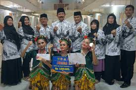
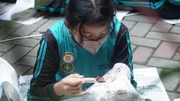
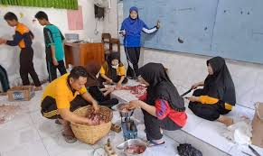

Artikel Terbaru
Memperingati Harjasda ke 164
Di Tulis Oleh : Radar Jatim.idSetelah sukses melaksanakan program P5 (Projek Penguatan Profil Pelajar Pancasila) dengan mengangkat kearifan lakal, yakni siswanya pratek membuat Udeng Pacul Gowang beberapa hari lalu, yang sekaligus menjadi Tutor Sebaya siswa kelas 8 dan 9. Kini bertepatan dengan Peringatan Harjasda (Hari Jadi Sidoarjo) ke 164.
Juara 1 Lomba Tari
Di Tulis Oleh : MELINTAS.IDMembanggakan, SMP PGRI 1 Buduran, Sidoarjo, menjadi juara pertama lomba Tari Kreasi Trasidional pada Olimpiade Sekolah PGRI Nasional ke-1, yang dilaksanakan pada tanggal 7 hingga 10 September 2023.SMP PGRI 1 Buduran berhasil menjuarai lomba Tari Kreasi Trasidional pada Olimpiade Sekolah PGRI ke-1 tingkat Nasional yang digelar di Palembang.

Kegiatan Maulid Nabi
Di Tulis Oleh : Ditulis Oleh Pihak SekolahWarga SMP PGRI 1 Buduran yang muslim berkomitmen meneladani akhlak Rasulullah SAW sebagai uswatun khasanah. Tekad ini diungkapkan pada peringatan Maulid Nabi Muhammad SAW tahun 1443 H di halaman sekolah.
Belajar Membuat Batik
Di Tulis Oleh : Radar Jatim.idDalam hal ini pihak sekolah telah menggandeng narasumber Lintang Septianti Hartono, pengusaha Batik Sari Kenongo Sarirogo Sidoarjo, yang memaparkan mulai dari orientasi batik, mengenal alat dan bahan membatik, tutorial proses membatik, dan motif khas batik Sidoarjo dengan segala spesifikasi corak warnanya, di Aula sekolah.
Penyembelihan Dan Pembagian Daging Kurban
Di Tulis Oleh : RadarJatim.id“Kegiatan seperti ini memang ada di proses pembelajarannya. Jadi selain dari teori di kelas mereka juga bisa mempraktekan langsung seperti sekarang ini,” tutur Indrajayanti Ratnaningsih usai memantau jalannya proses penyembelihan hewan qurban.

Kegiatan Halal Bihalal
Di Tulis Oleh : Ditulis Oleh Pihak Sekolahmoment Hari Raya Idul Fitri, juga bisa mempererat persaudaraan atau tali silaturrahim di antara sesama. Halal bihalal pertama dilaksanakan pada hari Sabtu, 7 Mei 2022. Semua peserta didik wajib berkunjung ke rumah wali kelasnya masing-masing.

Kegiatan Jalan Sehat
Di Tulis Oleh : Ditulis Oleh Pihak SekolahJalan sehat Persatuan Guru dan Siswa SMP PGRI 1 BUDURAN Republik Indonesia Kabupaten Sidoarjo dalam rangka HUT ke-78 PGRI dan Peringatan Hari Guru Nasional (HGN) Tahun 2023 digelar Minggu (26/11/203) pukul 06.00 WIB Pagi.

Kegiatan Pelepasan Siswa
Di Tulis Oleh : Ditulis Oleh Pihak SekolahPelepasan peserta didik kelas IX SMP PGRI 1 Buduran benar-benar bertaburkan doa, motivasi, dan prestasi. Bagaimana tidak. Mulai Kepala SMP PGRI 1 Buduran, Ketua Perwakilan YPLP PGRI Kabupaten Sidoarjo, dan Kepala Dinas Pendidikan dan Kebudayaan Kabupaten Sidoarjo.